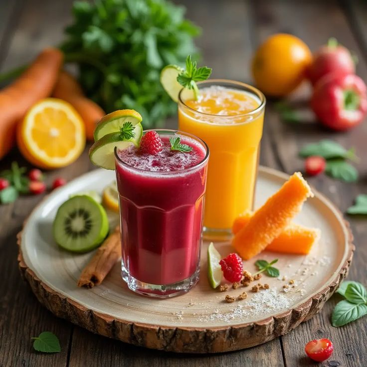

Cardápio equilibrado:
Cardápio Equilibrado – Segunda a Sexta

Segunda-feira Café da manhã:
Pão integral com queijo branco + 1 banana + café sem açúcar.
Almoço:
Arroz integral + feijão + frango grelhado + salada de alface e cenoura + suco natural
Lanche da tarde:
Iogurte natural com aveia.
Jantar:
Sopa de legumes + 1 fatia de pão integral + chá de camomila.

Terça-feira Café da manhã:
Vitamina de mamão com leite + 1 fatia de pão com pasta de abacate.
Almoço:
Purê de batata-doce + lentilha + carne moída + salada de rúcula e tomate.
Lanche da tarde:
Frutas secas (damasco + castanhas.)
Jantar:
Omelete com legumes + arroz integral.
Quarta-feira Café da manhã:
Mingau de aveia com banana + canela.
Almoço:
Macarrão integral + frango desfiado + brócolis + cenoura cozida.
Lanche da tarde:
Tapioca com queijo + chá verde.
Jantar:
Salada completa (folhas, ovo cozido, grão-de-bico, pepino, azeite).

Quinta-feira Café da manhã:
Pão de aveia + ricota + suco natural de laranja.
Almoço:
Arroz + feijão + peixe grelhado + abóbora refogada + couve.
Lanche da tarde:
Fruta da estação + iogurte.
Jantar:
Panqueca de frango com salada

Sexta-feira Café da manhã:
Smoothie de frutas vermelhas + granola.
Almoço:
Quinoa + grão-de-bico + carne cozida + espinafre refogado.
Lanche da tarde:
Bolinho de banana com aveia caseiro.
Jantar:
Sopa de abóbora + torrada integral

Dicas extras:
Beba muita água ao longo do dia (pelo menos 2 litros).
Evite frituras e excesso de sal.
Dê preferência a frutas como: maça, banana, pera, goiaba, uva, melancia e melão, legumes e
verduras da estação.
Evite alimentos ultraprocessados e refrigerantes, prefira sucos naturais e comidas saudaveis.